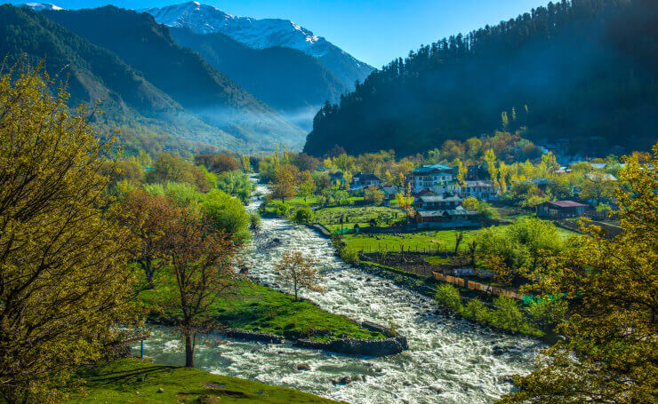

Famous Places to Visit in J&K
-

Gulmarg
Gulmarg has everything going for it: snowdressed mountains, greenery, lakes, pine & fir forests and different types of flowers.
-

Sonmarg
Sonmarg means a “meadow of gold”, is one of the best tourist places in Jammu and Kashmir for sightseeing & adventure. Its landscape is marked by a glacier, forests and snow capped mountains.
-

Pahalgam
Any tourist visiting the top 10 places in Jammu and Kashmir will always visit Pahalgam. Located in the Anantnag district, it is located on the banks of the River Lidder.
-
Verinag
Verinag is a town in the district of Anantnag, where the Verinag Spring is a must see attraction. The stone basin & arcade surrounding it were built by Jahangir, while the beautiful garden next to it was built by Shah Jahan.
Travel Packages
-
J&K HERITAGE TOUR 6 DAYS
- Duration: 5 days
- Price: 5000/- per person
- Include:- Yusmarg , Gulmarg , Sonmarg , Pahalgam
BOOKING NOW
-
J&K Heritage Tour 10 DAYS
- Duration: 10 days
- Price: 10000/- per person
- Includes :- Yusmarg , Gulmarg , Sonmarg , Pahalgam, Gurez Valley
BOOKING NOW
- Duration: 15 days
- Price: 15000/- per person
- Includes :- Yusmarg , Gulmarg , Sonmarg , Pahalgam, Gurez Valley , Srinagar , Vaishno Devi